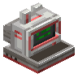
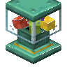

森罗物语：玩偶 Kaleidoscope Doll
共 9 个条目 · kaleidoscope_doll
版本: 1.4.1-neoforge+mc1.21.1 · 来源: kaleidoscopedoll-1.4.1-neoforge+mc1.21.1.jar
MC百科中文名: 森罗物语：玩偶
MC百科页面: https://www.mcmod.cn/class/19418.html（森罗物语：玩偶 (KaleidoscopeDoll)）
MC百科检索: site:mcmod.cn Kaleidoscope Doll
官方介绍 （Modrinth · 中文版由 GLM AI 翻译，仅供参考）
简介
为游戏添加了一个抽奖机，使用钻石代币来抽取三种不同等级的盲盒，拆开盲盒来抽取多达200+种不同的玩偶！
对玩偶捏捏，它们会像浴池小黄鸭一样吱吱叫！
在本地制作您的自定义玩偶！使用教程见：https://github.com/KaleidoscopeMods/KaleidoscopeDoll/wiki
图库
由 GLM AI 翻译，仅供参考
查看英文原文（Modrinth）
Introduction
Added a lottery machine to the game, use diamond tokens to draw three different levels of gift boxes, open the gift boxes to draw up to 200+ different dolls!
Pinch the dolls and they will squeak like a bathing duck!
Make Your Custom Doll Locally!guide：https://github.com/KaleidoscopeMods/KaleidoscopeDoll/wiki
为游戏添加了一个抽奖机，使用钻石代币来抽取三种不同等级的盲盒，拆开盲盒来抽取多达200+种不同的玩偶！
对玩偶捏捏，它们会像浴池小黄鸭一样吱吱叫！
在本地制作您的自定义玩偶！使用教程见：https://github.com/KaleidoscopeMods/KaleidoscopeDoll/wiki
Gallery
资料来源：Kaleidoscope Doll
物品与方块

电脑kaleidoscope_doll:computer · 方块?玩偶
kaleidoscope_doll:doll · 方块?玩偶
kaleidoscope_doll:doll_entity_item · 物品森罗玩偶
kaleidoscope_doll:doll_icon · 物品

玩偶抽奖机kaleidoscope_doll:doll_machine · 方块绿色礼品盲盒
kaleidoscope_doll:green_doll_gift_box · 方块紫色礼品盲盒
kaleidoscope_doll:purple_doll_gift_box · 方块
 指指点点
指指点点kaleidoscope_doll:tweaks_tool · 物品黄色礼品盲盒
kaleidoscope_doll:yellow_doll_gift_box · 方块